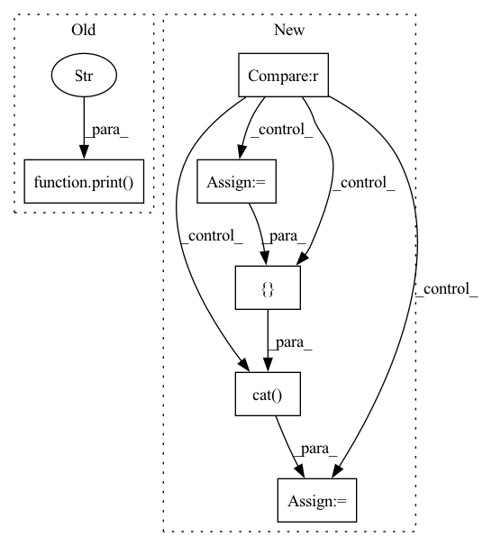

Pattern ID :26224
Before Change
z = self.get_vector(z_dist)
batch_dim = z.shape[0]
print(f"Batch dim: {batch_dim}")
print(f"Initial shape: {self.initial_shape}" )
projected_z = self.initial_layer(z)
reshaped_z = projected_z.view((batch_dim, self.initial_channels, self.initial_shape, self.initial_shape))
decoded_latents = self.decoder(reshaped_z)
mean_pixels = self.mean_layer(decoded_latents)After Change
batch_dim = z.shape[0]
// Project z to have the number of dimensions needed to reshape into (channels, shape, shape)
if self.action_representation_dim is not None :
action_representation = self.get_vector(extra_context)
print(f"Z shape {z.shape}")
print(f"Action Representation shape: {action_representation.shape}")
projected_z = self.initial_layer(torch.cat([ z, action_representation, dim=1) )
else:
projected_z = self.initial_layer(z)
In pattern: SUPERPATTERN
Frequency: 4
Non-data size: 6
Instances Fragment ID: 78944100
Project Name: humancompatibleai/eirli
Commit Name: 45ab4343697c83a6940037ee11314f9b70b1d2ec
Time: 2020-09-09
Author: codywild@berkeley.edu
File Name: src/il_representations/algos/decoders.py
M Class Name: PixelDecoder
N Class Name: PixelDecoder
M Method Name: decode_context(4)
N Method Name: decode_context(4)
M Parent Class: LossDecoder
N Parent Class: LossDecoder
M File Name: src/il_representations/algos/decoders.py
N File Name: src/il_representations/algos/decoders.py
M Start Line: 260
M End Line: 262
N Start Line: 277
N End Line: 290
Before Change
while self.cuda_available_chunk_num > int(self.cuda_chunk_num * empty_ratio):
self._admit(cid)
cid = cid+1
print(f"cid {cid}" )
print(f"Cache warmup finished cost {timer.elapsed} sec.")
print(f"after warmup: chunk num avialable {self.cuda_available_chunk_num} vs. cuda capacity {self.cuda_chunk_num}.")
self._reset_comm_stats()
After Change
// Warmup the cuda cache by moving high freq chunks (lowest chunk id) to cuda
preload_chunk_num = int(np.ceil(self.cuda_chunk_num * warmup_ratio))
if preload_chunk_num > 0 :
print(f"begin warmup CUDA Cache. Please wait in patient. preload {preload_chunk_num} chunks")
print(
f"before warmup: chunk num avialable {self.cuda_available_chunk_num} vs. cuda capacity {self.cuda_chunk_num}."
)
with Timer() as timer:
// extract chunks from cpu weight
preload_chunk_ids = torch.arange(preload_chunk_num)
preload_chunks = self.cpu_weight.view(self.chunk_num, -1).index_select(0, preload_chunk_ids).cuda()
// move chunks to cuda cache
preload_slot_ids = preload_chunk_ids.cuda()
self.cuda_partial_weight.view(self.cuda_chunk_num, -1).index_copy_(0, preload_slot_ids, preload_chunks)
// update auxiliary info
slot_offsets = preload_slot_ids.unsqueeze(1) * self.chunk_size
self.cached_chunk_table[preload_slot_ids] = torch.cat([ preload_slot_ids.unsqueeze(1), slot_offsets,
dim=1)
self.CCT[preload_slot_ids] = slot_offsets
self._cuda_available_chunk_num -= preload_chunk_num
print(f"Cache warmup finished cost {timer.elapsed} sec.")
print( Fragment ID: 78944101
Project Name: hpcaitech/cachedembedding
Commit Name: bdb579b4fd070379ff357c4b699bc4ede1a10b0a
Time: 2022-07-28
Author: zhangg1998@outlook.com
File Name: recsys/modules/embeddings/chunk_param_mgr.py
M Class Name: ChunkParamMgr
N Class Name: ChunkParamMgr
M Method Name: reorder(3)
N Method Name: reorder(3)
M Parent Class: object
N Parent Class: object
M File Name: recsys/modules/embeddings/chunk_param_mgr.py
N File Name: recsys/modules/embeddings/chunk_param_mgr.py
M Start Line: 114
M End Line: 125
N Start Line: 113
N End Line: 134
Before Change
z = self.get_vector(z_dist)
batch_dim = z.shape[0]
print(f"Batch dim: {batch_dim}")
print(f"Initial shape: {self.initial_shape}" )
projected_z = self.initial_layer(z)
reshaped_z = projected_z.view((batch_dim, self.initial_channels, self.initial_shape, self.initial_shape))
decoded_latents = self.decoder(reshaped_z)
mean_pixels = self.mean_layer(decoded_latents)After Change
batch_dim = z.shape[0]
// Project z to have the number of dimensions needed to reshape into (channels, shape, shape)
if self.action_representation_dim is not None :
action_representation = self.get_vector(extra_context)
print(f"Z shape {z.shape}")
print(f"Action Representation shape: {action_representation.shape}")
projected_z = self.initial_layer(torch.cat([ z, action_representation, dim=1) )
else:
projected_z = self.initial_layer(z)
Fragment ID: 78944104
Project Name: humancompatibleai/eirli
Commit Name: e3cdf26f70d016c0a53e0cdda50619d220d6c507
Time: 2020-09-09
Author: codywild@berkeley.edu
File Name: src/il_representations/algos/decoders.py
M Class Name: PixelDecoder
N Class Name: PixelDecoder
M Method Name: decode_context(4)
N Method Name: decode_context(4)
M Parent Class: LossDecoder
N Parent Class: LossDecoder
M File Name: src/il_representations/algos/decoders.py
N File Name: src/il_representations/algos/decoders.py
M Start Line: 260
M End Line: 262
N Start Line: 277
N End Line: 290